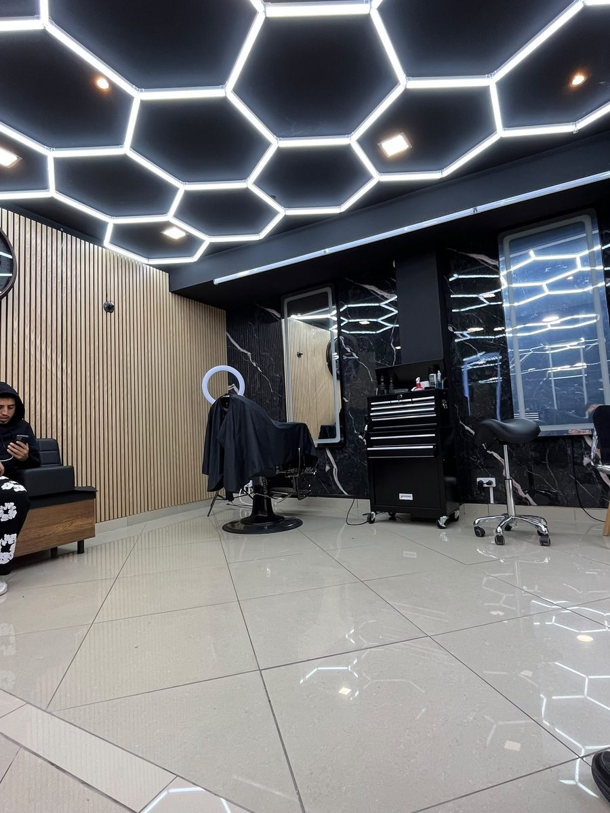

Le salon
Une parenthèse au cœur de Joigny
Marbre, chêne et lumière : le décor pensé pour prendre le temps de bien faire les choses.
Le salon
Une parenthèse, loin du bruit
Chez LA Pause, on a voulu un lieu à part : plafond nid d'abeille baigné de néon, marbre veiné, bois chaud au mur. L'adresse où l'on prend le temps de bien faire les choses, pour une coupe homme nette comme pour une couleur femme sur-mesure.
Nos coiffeurs vous conseillent selon votre style, votre nature de cheveu et votre quotidien. Produits professionnels, hygiène irréprochable, et ce petit moment pour soi qui donne son nom au salon.
Conseil sur-mesure
Un diagnostic avant chaque prestation.
Produits premium
Des marques pro pour homme et femme.
Cadre d'exception
Marbre, bois & lumière hexagonale.

L'expérience LA Pause
Ce qui change, ici
On vous écoute
Chaque rendez-vous commence par un vrai échange sur l'envie et l'entretien au quotidien.
La main experte
Des gestes précis, des finitions soignées, un résultat qui tient dans le temps.
Le bon produit
Sélection pro adaptée à votre cheveu, en soin comme en coiffage.
Le temps d'une pause
Un cadre apaisant où l'on repart détendu, et bien coiffé.